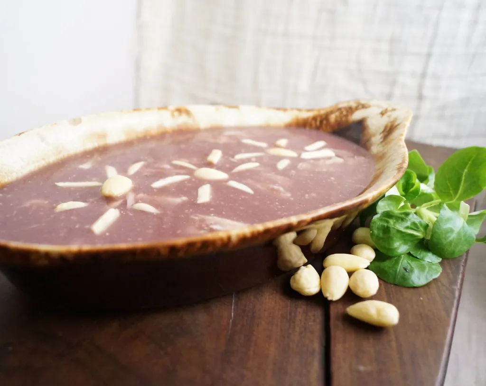

Blandissory

Description
“Four master pyromancers conjured up beasts of living flame to tear at each other with fiery claws whilst the serving men ladled out bowls of blandissory, a mixture of beef broth and boiled wine sweetened with honey and dotted with blanched almonds and chunks of capon.” -A Storm of Swords
Ingredients
- 1/4 cup Ground almonds
- 2 cups meat broth
- 1 cup wine
- 2 Tbs. rice flour
- ~1 cup shredded and chopped cooked chicken meat
- pinch of saffron (if using white wine)
- pinch ground ginger
- pinch ground cinnamon
- 1-2 Tbs. sugar or honey
- blanched almonds for garnish (~1/4 cup)
Steps
- Combine ground almonds with wine/broth, and bring to a boil.
- Gradually add the rice flour, whisking to avoid creating clumps.
- Add the chicken, spices, and honey.
- Stir for around 2 minutes.
- Pour into your serving dish, sprinkle with almonds, and serve!